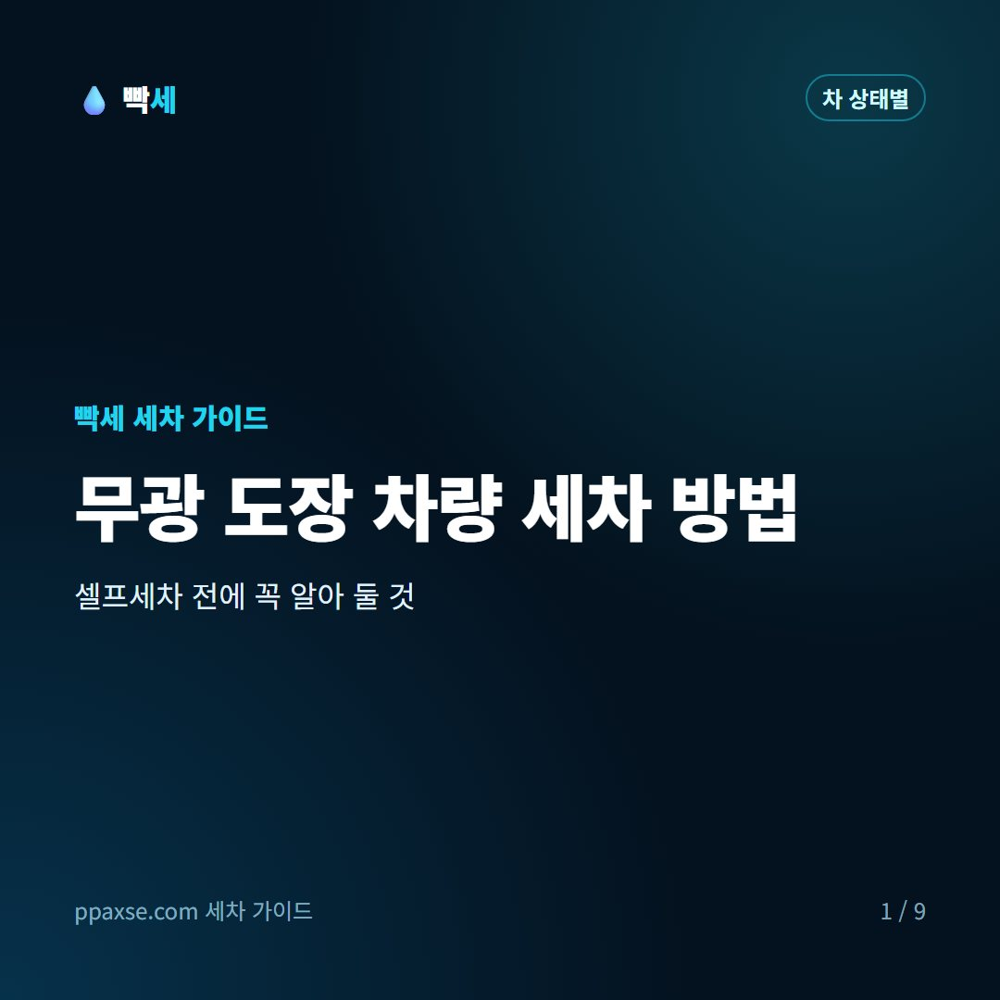
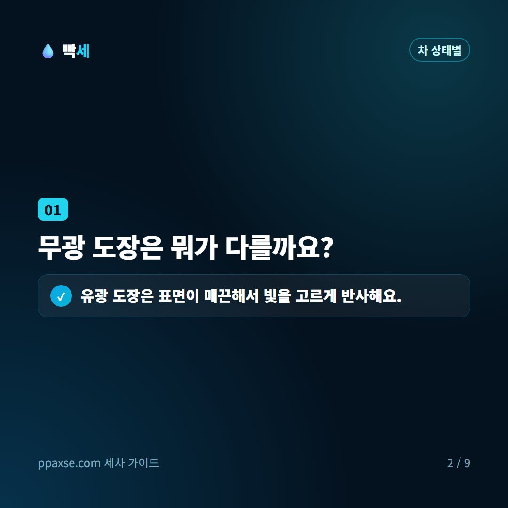
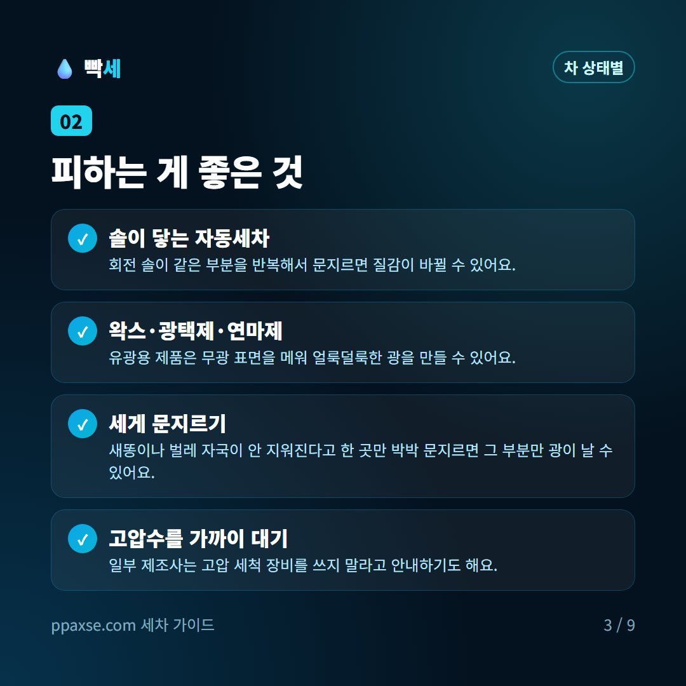
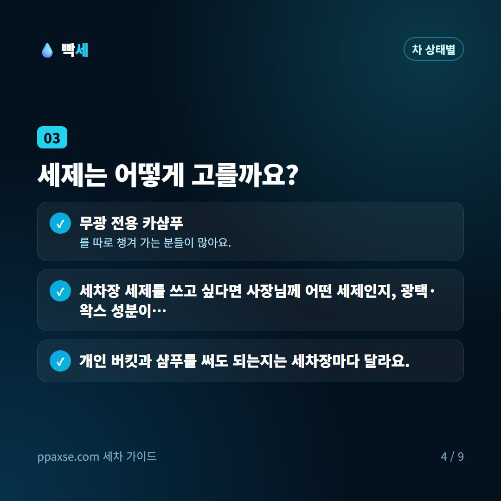
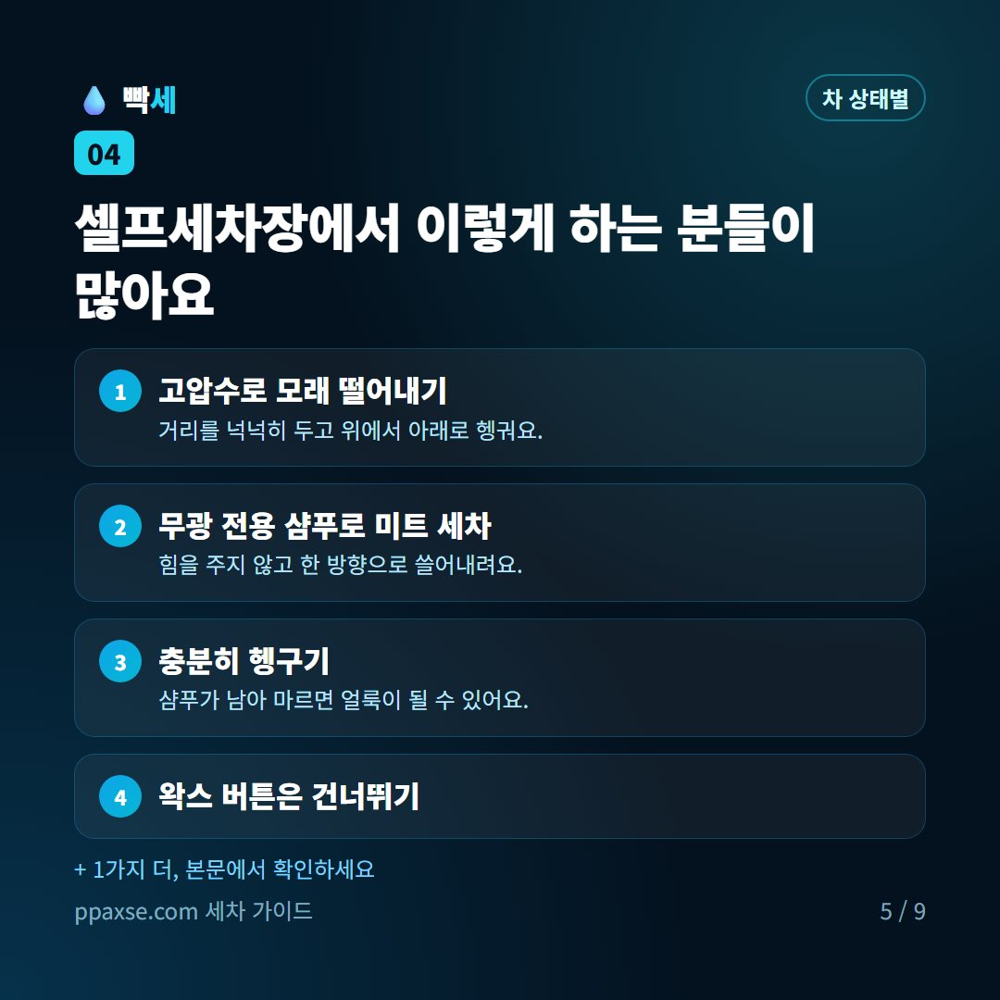
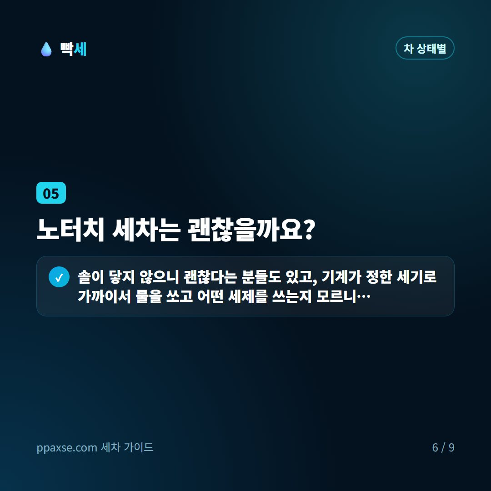
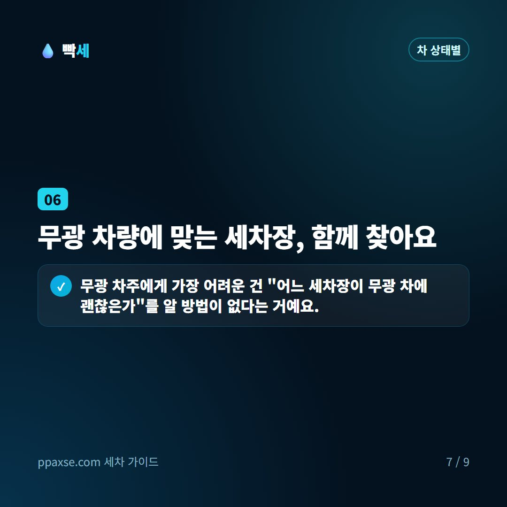

무광 도장 차량 세차 방법 — 셀프세차 전에 꼭 알아 둘 것
무광 도장 차량이 예전보다 자주 보여요. 은은한 질감이 멋지지만, 세차할 때는 일반 유광 차량과 다르게 신경 쓸 게 많아요. 빡세를 만든 운영자도 무광 차량으로 바꾼 뒤 자동세차를 쓰지 못하게 됐고, 전용 샴푸를 따로 사고, 맞는 세차장을 찾느라 고생했어요. 그 경험을 바탕으로, 무광 차량을 처음 세차하는 분이 알아 두면 좋은 것을 정리했어요.

무광 도장은 뭐가 다를까요?

유광 도장은 표면이 매끈해서 빛을 고르게 반사해요. 무광 도장은 표면이 일부러 고르지 않게 만들어져 빛을 흩어 보내요. 그래서 문지르거나 연마하면 그 부분만 매끈해져 광이 올라오고, 한번 바뀐 질감은 되돌리기 어려워요. 유광 차는 흠집이 나면 광택 작업으로 다듬기도 하지만, 무광은 그 방법을 쓰기 어렵다는 게 가장 큰 차이예요.
피하는 게 좋은 것

- 솔이 닿는 자동세차 — 회전 솔이 같은 부분을 반복해서 문지르면 질감이 바뀔 수 있어요. 많은 제조사가 자동세차를 피하라고 안내해요.
- 왁스·광택제·연마제 — 유광용 제품은 무광 표면을 메워 얼룩덜룩한 광을 만들 수 있어요. 셀프세차 기계의 왁스·광택 버튼도 쓰지 않는 분들이 많아요.
- 세게 문지르기 — 새똥이나 벌레 자국이 안 지워진다고 한 곳만 박박 문지르면 그 부분만 광이 날 수 있어요.
- 고압수를 가까이 대기 — 일부 제조사는 고압 세척 장비를 쓰지 말라고 안내하기도 해요. 셀프세차장 고압수를 쓴다면 거리를 충분히 두는 분들이 많아요.
세제는 어떻게 고를까요?

무광 차주들이 가장 고민하는 부분이에요. 셀프세차장 폼건에 들어 있는 세제는 어떤 제품인지 알기 어렵고, 대부분 유광 차량을 기준으로 쓰여요. 광택 성분이 섞인 세제라면 무광 표면에 얼룩이 생길 수 있어요.
- 무광 전용 카샴푸를 따로 챙겨 가는 분들이 많아요. 버킷에 풀어 미트로 씻는 방식이에요.
- 세차장 세제를 쓰고 싶다면 사장님께 어떤 세제인지, 광택·왁스 성분이 있는지 물어보는 것도 방법이에요.
- 개인 버킷과 샴푸를 써도 되는지는 세차장마다 달라요. 가기 전에 확인해 두면 헛걸음을 줄일 수 있어요.
셀프세차장에서 이렇게 하는 분들이 많아요

- 고압수로 모래 떨어내기 — 거리를 넉넉히 두고 위에서 아래로 헹궈요.
- 무광 전용 샴푸로 미트 세차 — 힘을 주지 않고 한 방향으로 쓸어내려요. 원을 그리며 문지르지 않는 분들이 많아요.
- 충분히 헹구기 — 샴푸가 남아 마르면 얼룩이 될 수 있어요.
- 왁스 버튼은 건너뛰기
- 물기는 눌러서 흡수 — 타월을 올려놓고 살짝 눌러 물을 빨아들이게 해요. 에어건으로 물기를 날리는 것도 문지르지 않아서 좋아요.
노터치 세차는 괜찮을까요?

솔이 닿지 않으니 괜찮다는 분들도 있고, 기계가 정한 세기로 가까이서 물을 쏘고 어떤 세제를 쓰는지 모르니 피한다는 분들도 있어요. 정해진 답이 없는 부분이라, 설명서의 안내를 따르는 게 가장 확실해요. 두 방식의 차이는 노터치 세차와 셀프세차 차이에 따로 정리했어요.
무광 차량에 맞는 세차장, 함께 찾아요

무광 차주에게 가장 어려운 건 "어느 세차장이 무광 차에 괜찮은가"를 알 방법이 없다는 거예요. 개인 버킷을 써도 되는지, 폼건 세제가 뭔지, 그늘진 베이가 있는지 같은 정보요. 빡세는 이런 정보를 이용자들과 함께 모아 가려고 해요. 무광 차로 다녀온 세차장이 있다면 한마디로 경험을 남겨 주세요. 다른 무광 차주에게 정말 큰 도움이 돼요. 지역별 목록은 지역별 세차장 모음에서 볼 수 있어요.
셀프세차·노터치·손세차를 종류별로 골라 보고, 폼건·온수·하부세차 같은 시설 정보도 확인할 수 있어요.
🗺️ 세차장 지도 열기✏️ 자주 가는 세차장에 한마디 남기기🎁 한마디를 남기면 가입 없이도 매주 기프티콘 추첨에 응모돼요.